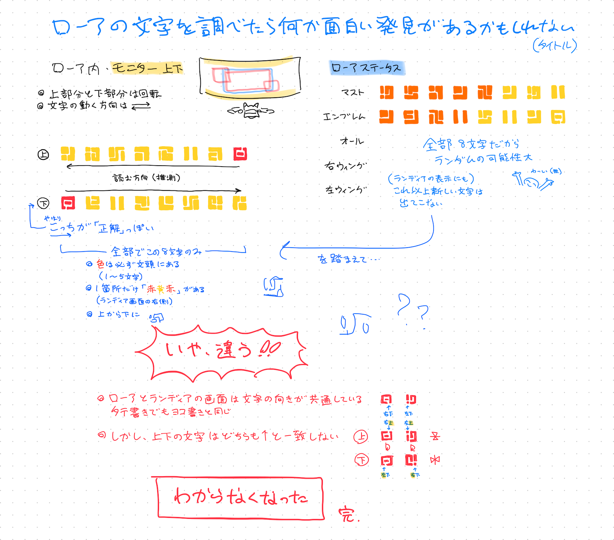

cereal and choccy milk 〜中庭〜
00:ローア文字のまとめ
あまり言語的な情報は出ませんでしたが、ちょっとした法則を見つけたり（見つけなかったり）したので、一応置いておきます。
絵を描く時に少しは参考になるかな？
01:発見
{kind=link}

最終結果から言うと、ローアの文字は8パターンの記号で構成されています。
これがスクロールする上下部分と、ランディアとローアの情報が表示される画面中央とで見え方が違うのですが、画面中央の文字の向きなどが広い範囲で共通しているのがランディアとローアの画面なので、おそらくそっちが「正解」の向きです。
スクロールする上下部分は若干ややこしい状態になっています。
上の部分と下の部分は同じ文字配列が180度回転で表示されています。
画面中央の向きと比べると、上部分は文字の上下が反転していて、下部分は左右が反転しています。
中央に戻りますが、ランディアの画面には一部縦書きの文章があります。
縦書きの文字は横書きの部分と同じ向きです。（日本語の縦・横書きの原理と同じ）
全文共通の特徴は、8種類ある文字の原型と、文頭（左側）に必ず赤色の文字が1〜5文字あることです。
1箇所だけ3文字が赤黄赤のパターンになった例外はありました。
02:応用
創作に役立ちそうな応用法を考えてみました。
自分が楽しいだけなので考察でもなんでもないです。
今後思いついたら随時追加。
牛耕式・ブストロフェドン
文章の向きが行ごとに変わる筆記方式。古代ギリシャ語やエトルリア語などの古代言語に多く見られた。
現代の自然言語（自分が調べることができた範囲）で牛耕式のものは、バヌアツの一部で使われるラガ語のアヴォイウリという文字だけだった。アヴォイウリについて詳しく調べようと思ったけど、本来の作業に手が付かなくなるので割愛。これ関連の興味深い論文はこちら。
ちなみに人工言語ではイスクイルがこの方式を使ったりするらしいが、特に詳しい情報は見つかりませんでした。それはさておき……。
牛耕式は基本的に、1行目が→の方向だとすれば、その次の行は←に向きが切り替わり鏡文字で書かれる。ほとんどの場合がこれで、上記の古代ギリシャ語とエトルリア語もこの方式。
しかし、中には「リバース・ブストロフェドン」という方式もある。これは通常の牛耕式と同じく行ごとに方向が変わるが、今度は逆向きの行が鏡文字ではなく、180度回転で書かれる。この方式はかなり珍しく、（自分調べ略）ロンゴロンゴという未解読の古代文字にのみ見られる。
自分の記憶では90度回転（渦巻状）のものもあったが、調べるのが難しくて断念。あるんだ……あるはずなんだ……！！
まぁ、こういう感じで膨らませるんじゃな〜い？という踏み台でした。
特に着地点はないです、すみません。
03:結論
この通り、ディスカバリー文字のように解読できるようなものではなく、少なめの文字をランダムに配置し言語っぽく見せるタイプですね。
今後のメモ
- 暇な時に諦めた部分を書き起こす あと原型を分かりやすくする
- 一応（絵のために）クラマホの手の魔法陣の模様も観察しておきたい
Content
News
Link
SITE NAME: cereal and choccy milkWEBMASTER: ちょき (Choccy)
URL: https://cerealandchoccymilk